This is the full illustrated version of a teaching presentation prepared by Dr. Maninder Singh (GMCH Amritsar). Every slide is shown below with its text, so you can read it like an article — or download the original PowerPoint (.pptx) to teach from it. Topics covered include: Global & Indian Burden of Osteoporosis; Bone Remodelling & Pathophysiology of Osteoporosis; Risk Factors & FRAX Tool; DXA Scan — Interpretation & WHO Criteria; Pharmacotherapy — Drug Comparison Table; Bisphosphonate Evidence — Key Trials; Treatment Algorithm — Post-menopausal Osteoporosis.
Contents — jump to a slide (21)
- OSTEOPOROSIS
- Global & Indian Burden of Osteoporosis
- Bone Remodelling & Pathophysiology of Osteoporosis
- Risk Factors & FRAX Tool
- DXA Scan — Interpretation & WHO Criteria
- Pharmacotherapy — Drug Comparison Table
- Bisphosphonate Evidence — Key Trials
- Treatment Algorithm — Post-menopausal Osteoporosis
- Hip Fracture — Emergency Management (Fragility)
- Perioperative Hip Fracture Care — Best Practice
- Osteoporotic Vertebral Compression Fractures (VCF)
- Falls Prevention — Integrated Approach
- Fracture Liaison Service (FLS) — Reducing Treatment Gap
- Non-Pharmacological Bone Health Strategies
- Treatment Monitoring & Drug Holidays
- Secondary Osteoporosis — Causes & Management
- BMD Gains with Pharmacotherapy — Spine vs Hip
- CASE STUDY 1 — Postmenopausal Hip Fracture
- CASE STUDY 2 — Glucocorticoid-Induced OP
- Emerging Therapies & Future Directions
- CONCLUSIONS
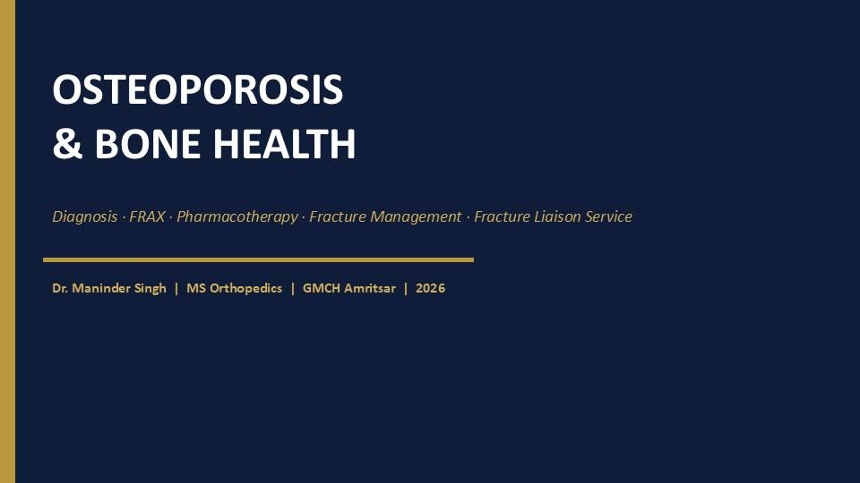
OSTEOPOROSIS
- Diagnosis · FRAX · Pharmacotherapy · Fracture Management · Fracture Liaison Service
- Dr. Maninder Singh | MS Orthopedics | GMCH Amritsar | 2026
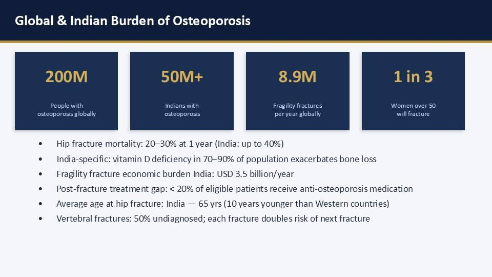
Global & Indian Burden of Osteoporosis
- 200M
- People with
- osteoporosis globally
- 50M+
- Indians with
- osteoporosis
- 8.9M
- Fragility fractures
- per year globally
- 1 in 3
- Women over 50
- will fracture
- Hip fracture mortality: 20–30% at 1 year (India: up to 40%)
- India-specific: vitamin D deficiency in 70–90% of population exacerbates bone loss
- Fragility fracture economic burden India: USD 3.5 billion/year
- Post-fracture treatment gap: < 20% of eligible patients receive anti-osteoporosis medication
- Average age at hip fracture: India — 65 yrs (10 years younger than Western countries)
- Vertebral fractures: 50% undiagnosed; each fracture doubles risk of next fracture
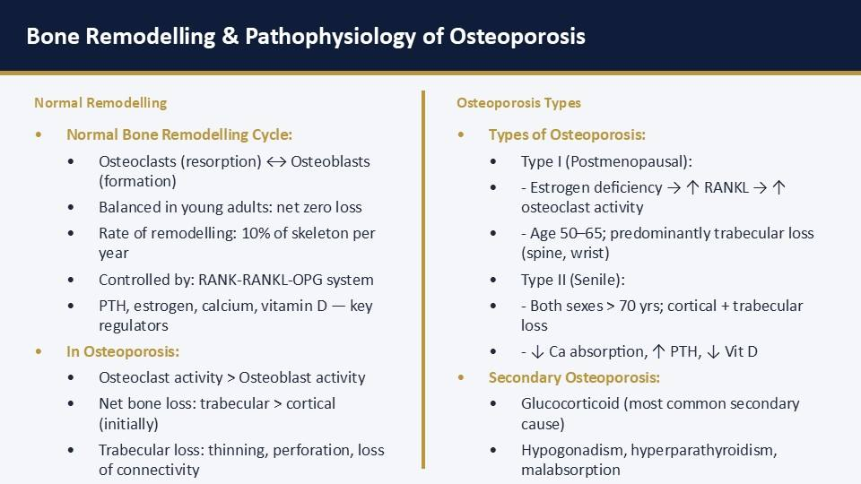
Bone Remodelling & Pathophysiology of Osteoporosis
- Normal Remodelling
- Normal Bone Remodelling Cycle:
- Osteoclasts (resorption) ↔ Osteoblasts (formation)
- Balanced in young adults: net zero loss
- Rate of remodelling: 10% of skeleton per year
- Controlled by: RANK-RANKL-OPG system
- PTH, estrogen, calcium, vitamin D — key regulators
- In Osteoporosis:
- Osteoclast activity > Osteoblast activity
- Net bone loss: trabecular > cortical (initially)
- Trabecular loss: thinning, perforation, loss of connectivity
- Cortical loss: thinning and increased porosity
- Osteoporosis Types
- Types of Osteoporosis:
- Type I (Postmenopausal):
- - Estrogen deficiency → ↑ RANKL → ↑ osteoclast activity
- - Age 50–65; predominantly trabecular loss (spine, wrist)
- Type II (Senile):
- - Both sexes > 70 yrs; cortical + trabecular loss
- - ↓ Ca absorption, ↑ PTH, ↓ Vit D
- Secondary Osteoporosis:
- Glucocorticoid (most common secondary cause)
- Hypogonadism, hyperparathyroidism, malabsorption
- Anticonvulsants, aromatase inhibitors, PPIs
- CKD: renal osteodystrophy (high vs low turnover)
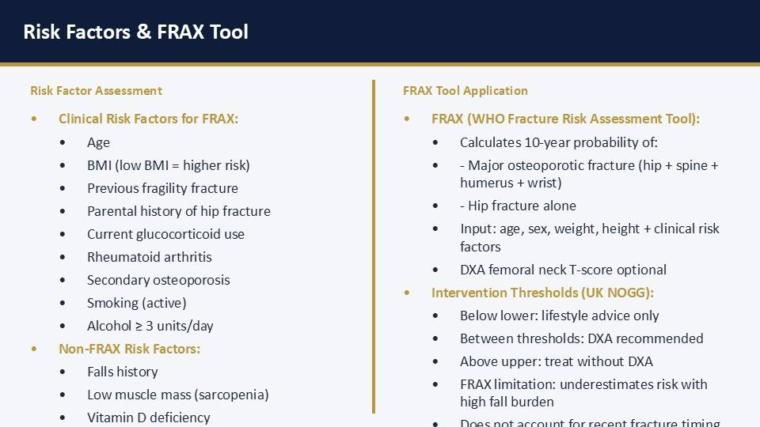
Risk Factors & FRAX Tool
- Risk Factor Assessment
- Clinical Risk Factors for FRAX:
- Age
- BMI (low BMI = higher risk)
- Previous fragility fracture
- Parental history of hip fracture
- Current glucocorticoid use
- Rheumatoid arthritis
- Secondary osteoporosis
- Smoking (active)
- Alcohol ≥ 3 units/day
- Non-FRAX Risk Factors:
- Falls history
- Low muscle mass (sarcopenia)
- Vitamin D deficiency
- Immobility / institutionalisation
- Visual impairment
- FRAX Tool Application
- FRAX (WHO Fracture Risk Assessment Tool):
- Calculates 10-year probability of:
- - Major osteoporotic fracture (hip + spine + humerus + wrist)
- - Hip fracture alone
- Input: age, sex, weight, height + clinical risk factors
- DXA femoral neck T-score optional
- Intervention Thresholds (UK NOGG):
- Below lower: lifestyle advice only
- Between thresholds: DXA recommended
- Above upper: treat without DXA
- FRAX limitation: underestimates risk with high fall burden
- Does not account for recent fracture timing
- India: use FRAX with Indian Caucasian / South Asian reference
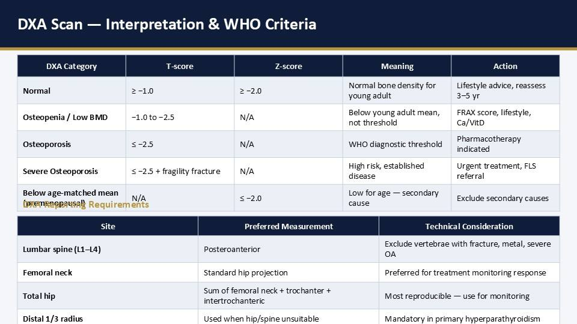
DXA Scan — Interpretation & WHO Criteria
DXA Reporting Requirements
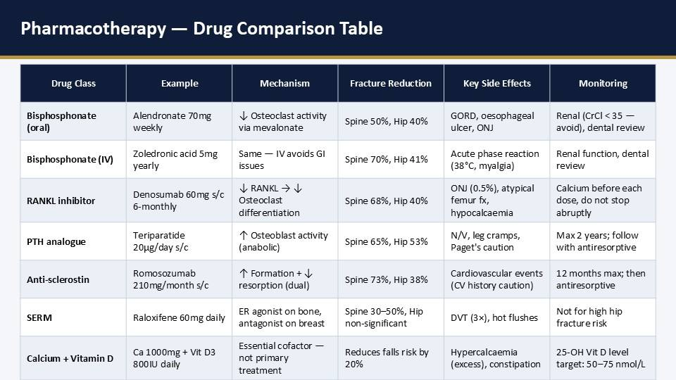
Pharmacotherapy — Drug Comparison Table
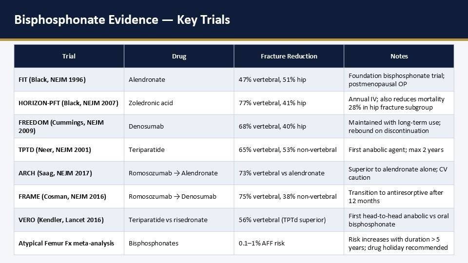
Bisphosphonate Evidence — Key Trials
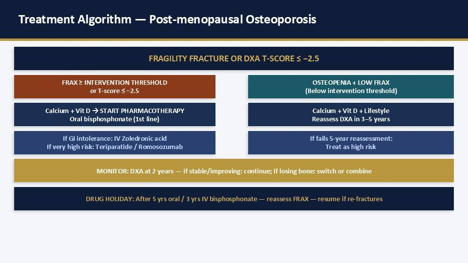
Treatment Algorithm — Post-menopausal Osteoporosis
- FRAGILITY FRACTURE OR DXA T-SCORE ≤ −2.5
- FRAX ≥ INTERVENTION THRESHOLD
- or T-score ≤ −2.5
- OSTEOPENIA + LOW FRAX
- (Below intervention threshold)
- Calcium + Vit D → START PHARMACOTHERAPY
- Oral bisphosphonate (1st line)
- Calcium + Vit D + Lifestyle
- Reassess DXA in 3–5 years
- If GI intolerance: IV Zoledronic acid
- If very high risk: Teriparatide / Romosozumab
- If fails 5-year reassessment:
- Treat as high risk
- MONITOR: DXA at 2 years — if stable/improving: continue; if losing bone: switch or combine
- DRUG HOLIDAY: After 5 yrs oral / 3 yrs IV bisphosphonate — reassess FRAX — resume if re-fractures
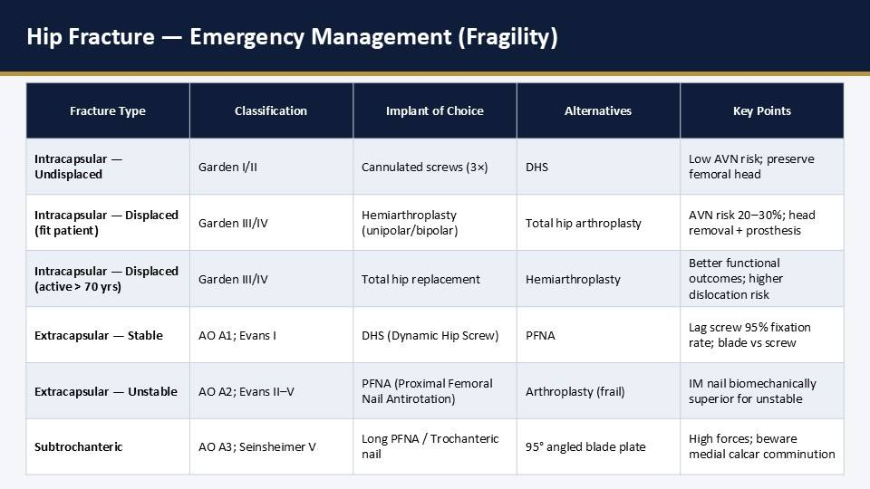
Hip Fracture — Emergency Management (Fragility)
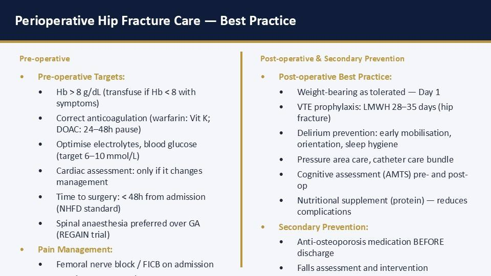
Perioperative Hip Fracture Care — Best Practice
- Pre-operative
- Pre-operative Targets:
- Hb > 8 g/dL (transfuse if Hb < 8 with symptoms)
- Correct anticoagulation (warfarin: Vit K; DOAC: 24–48h pause)
- Optimise electrolytes, blood glucose (target 6–10 mmol/L)
- Cardiac assessment: only if it changes management
- Time to surgery: < 48h from admission (NHFD standard)
- Spinal anaesthesia preferred over GA (REGAIN trial)
- Pain Management:
- Femoral nerve block / FICB on admission
- Regular paracetamol
- Avoid NSAIDs and opioids if possible in elderly
- Regional anaesthesia first-line for surgery
- Post-operative & Secondary Prevention
- Post-operative Best Practice:
- Weight-bearing as tolerated — Day 1
- VTE prophylaxis: LMWH 28–35 days (hip fracture)
- Delirium prevention: early mobilisation, orientation, sleep hygiene
- Pressure area care, catheter care bundle
- Cognitive assessment (AMTS) pre- and post-op
- Nutritional supplement (protein) — reduces complications
- Secondary Prevention:
- Anti-osteoporosis medication BEFORE discharge
- Falls assessment and intervention
- FLS (Fracture Liaison Service) referral
- Vitamin D supplementation (800–1000 IU/day)
- Target 25-OH VitD > 50 nmol/L
- Home modification, walking aids assessment
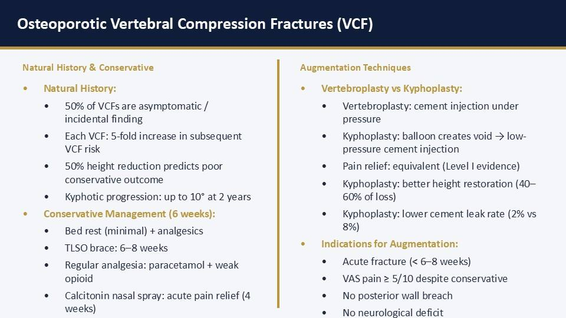
Osteoporotic Vertebral Compression Fractures (VCF)
- Natural History & Conservative
- Natural History:
- 50% of VCFs are asymptomatic / incidental finding
- Each VCF: 5-fold increase in subsequent VCF risk
- 50% height reduction predicts poor conservative outcome
- Kyphotic progression: up to 10° at 2 years
- Conservative Management (6 weeks):
- Bed rest (minimal) + analgesics
- TLSO brace: 6–8 weeks
- Regular analgesia: paracetamol + weak opioid
- Calcitonin nasal spray: acute pain relief (4 weeks)
- Reassess at 6 weeks: if VAS > 5/10 → intervention
- Augmentation Techniques
- Vertebroplasty vs Kyphoplasty:
- Vertebroplasty: cement injection under pressure
- Kyphoplasty: balloon creates void → low-pressure cement injection
- Pain relief: equivalent (Level I evidence)
- Kyphoplasty: better height restoration (40–60% of loss)
- Kyphoplasty: lower cement leak rate (2% vs 8%)
- Indications for Augmentation:
- Acute fracture (< 6–8 weeks)
- VAS pain ≥ 5/10 despite conservative
- No posterior wall breach
- No neurological deficit
- VERTOS IV: sham vs vertebroplasty — limited pain benefit
- Select acute, bone-oedema-positive (STIR +) patients
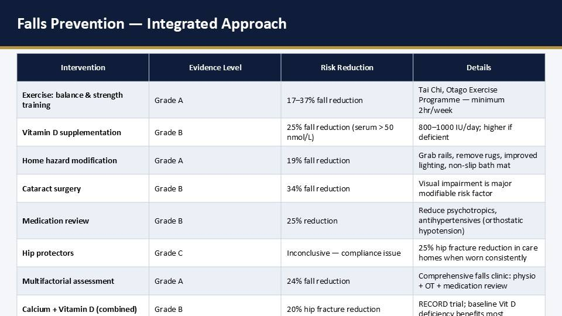
Falls Prevention — Integrated Approach
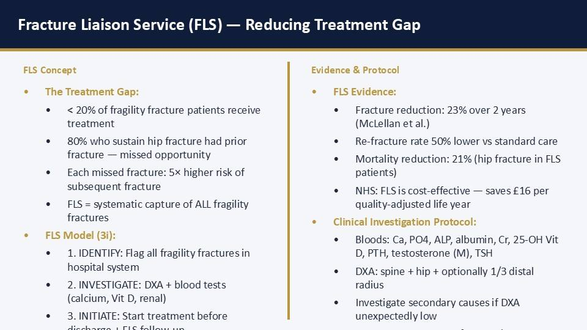
Fracture Liaison Service (FLS) — Reducing Treatment Gap
- FLS Concept
- The Treatment Gap:
- < 20% of fragility fracture patients receive treatment
- 80% who sustain hip fracture had prior fracture — missed opportunity
- Each missed fracture: 5× higher risk of subsequent fracture
- FLS = systematic capture of ALL fragility fractures
- FLS Model (3i):
- 1. IDENTIFY: Flag all fragility fractures in hospital system
- 2. INVESTIGATE: DXA + blood tests (calcium, Vit D, renal)
- 3. INITIATE: Start treatment before discharge + FLS follow-up
- FLS models A–D based on service intensity (IOF classification)
- Evidence & Protocol
- FLS Evidence:
- Fracture reduction: 23% over 2 years (McLellan et al.)
- Re-fracture rate 50% lower vs standard care
- Mortality reduction: 21% (hip fracture in FLS patients)
- NHS: FLS is cost-effective — saves £16 per quality-adjusted life year
- Clinical Investigation Protocol:
- Bloods: Ca, PO4, ALP, albumin, Cr, 25-OH Vit D, PTH, testosterone (M), TSH
- DXA: spine + hip + optionally 1/3 distal radius
- Investigate secondary causes if DXA unexpectedly low
- DEXA repeat: 2 years after starting pharmacotherapy
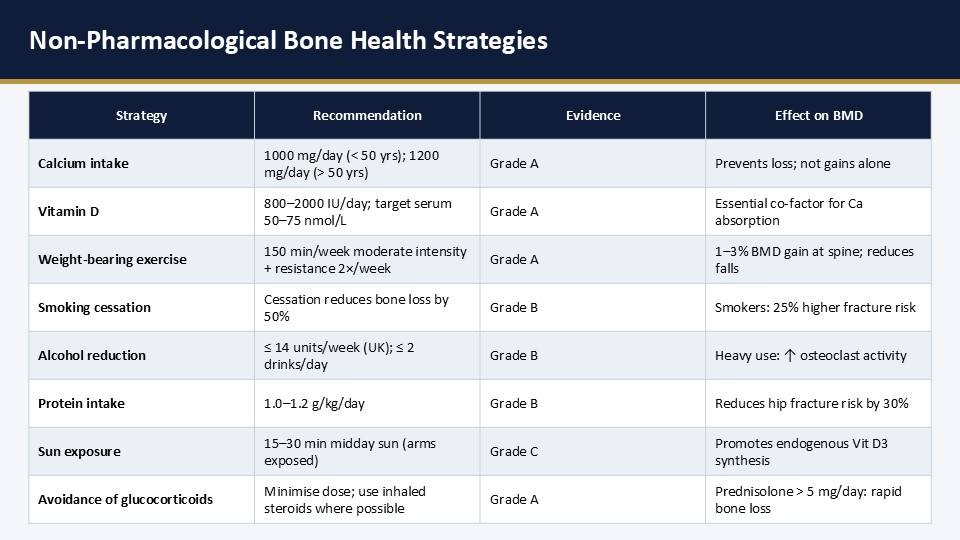
Non-Pharmacological Bone Health Strategies
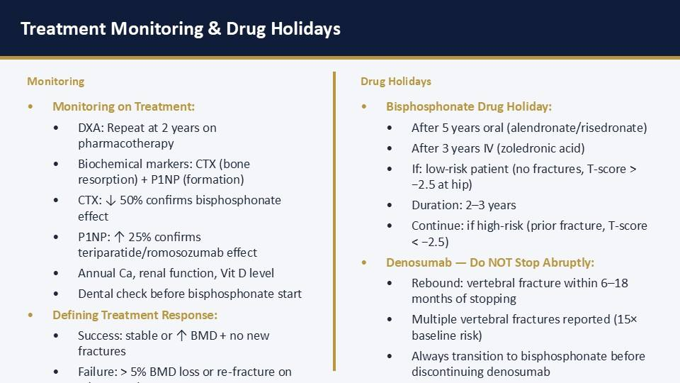
Treatment Monitoring & Drug Holidays
- Monitoring
- Monitoring on Treatment:
- DXA: Repeat at 2 years on pharmacotherapy
- Biochemical markers: CTX (bone resorption) + P1NP (formation)
- CTX: ↓ 50% confirms bisphosphonate effect
- P1NP: ↑ 25% confirms teriparatide/romosozumab effect
- Annual Ca, renal function, Vit D level
- Dental check before bisphosphonate start
- Defining Treatment Response:
- Success: stable or ↑ BMD + no new fractures
- Failure: > 5% BMD loss or re-fracture on adequate therapy
- Switch: if fail oral → IV, or antiresorptive → anabolic
- Drug Holidays
- Bisphosphonate Drug Holiday:
- After 5 years oral (alendronate/risedronate)
- After 3 years IV (zoledronic acid)
- If: low-risk patient (no fractures, T-score > −2.5 at hip)
- Duration: 2–3 years
- Continue: if high-risk (prior fracture, T-score < −2.5)
- Denosumab — Do NOT Stop Abruptly:
- Rebound: vertebral fracture within 6–18 months of stopping
- Multiple vertebral fractures reported (15× baseline risk)
- Always transition to bisphosphonate before discontinuing denosumab
- Give zoledronic acid 6–12 months after last denosumab dose
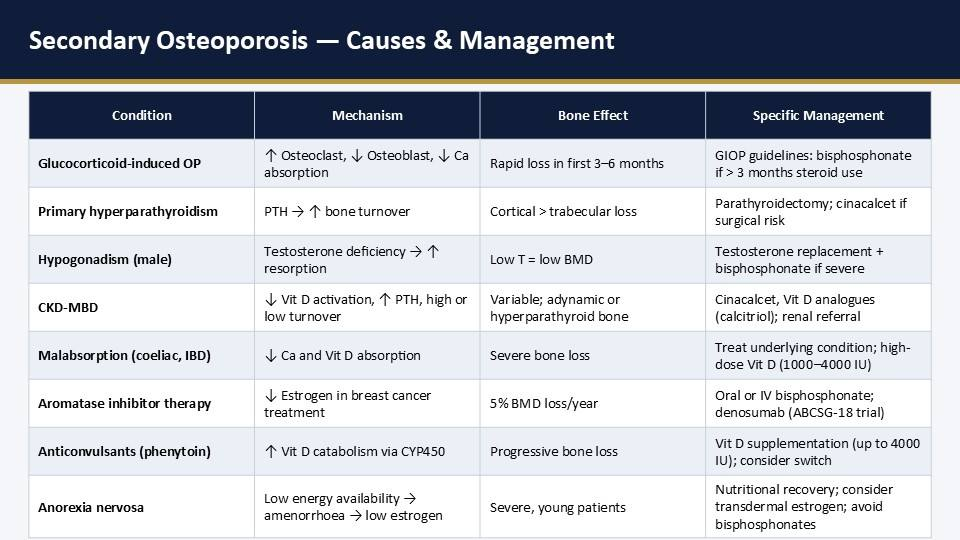
Secondary Osteoporosis — Causes & Management
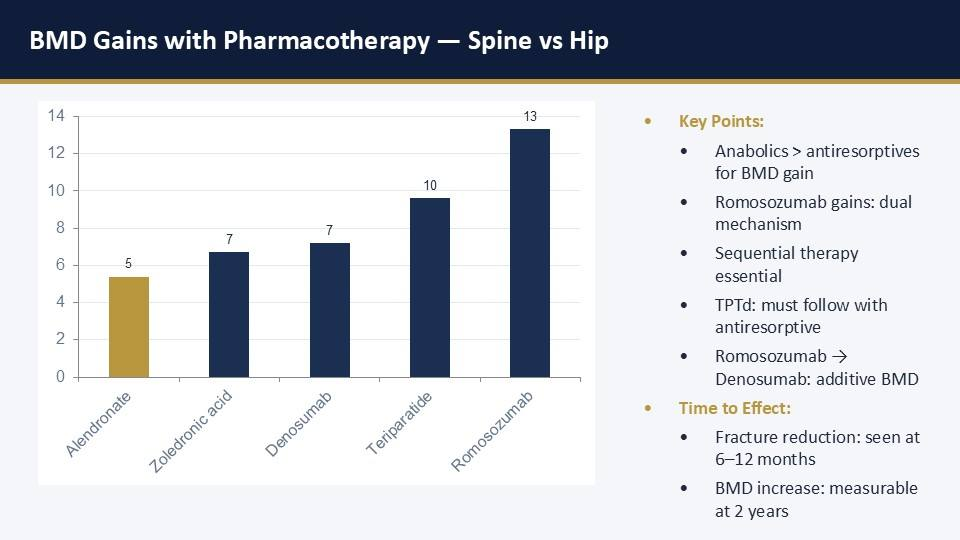
BMD Gains with Pharmacotherapy — Spine vs Hip
- Key Points:
- Anabolics > antiresorptives for BMD gain
- Romosozumab gains: dual mechanism
- Sequential therapy essential
- TPTd: must follow with antiresorptive
- Romosozumab → Denosumab: additive BMD
- Time to Effect:
- Fracture reduction: seen at 6–12 months
- BMD increase: measurable at 2 years
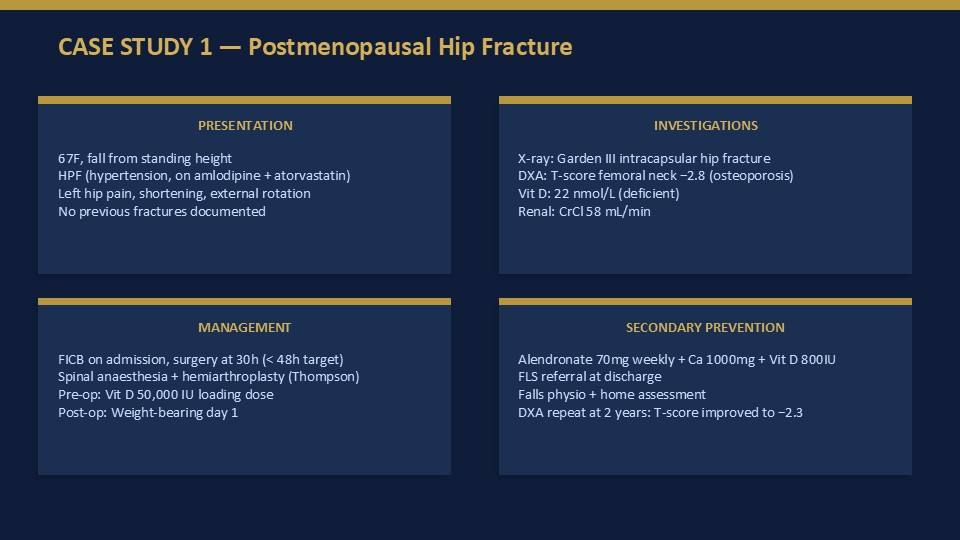
CASE STUDY 1 — Postmenopausal Hip Fracture
- PRESENTATION
- 67F, fall from standing height
- HPF (hypertension, on amlodipine + atorvastatin)
- Left hip pain, shortening, external rotation
- No previous fractures documented
- INVESTIGATIONS
- X-ray: Garden III intracapsular hip fracture
- DXA: T-score femoral neck −2.8 (osteoporosis)
- Vit D: 22 nmol/L (deficient)
- Renal: CrCl 58 mL/min
- MANAGEMENT
- FICB on admission, surgery at 30h (< 48h target)
- Spinal anaesthesia + hemiarthroplasty (Thompson)
- Pre-op: Vit D 50,000 IU loading dose
- Post-op: Weight-bearing day 1
- SECONDARY PREVENTION
- Alendronate 70mg weekly + Ca 1000mg + Vit D 800IU
- FLS referral at discharge
- Falls physio + home assessment
- DXA repeat at 2 years: T-score improved to −2.3
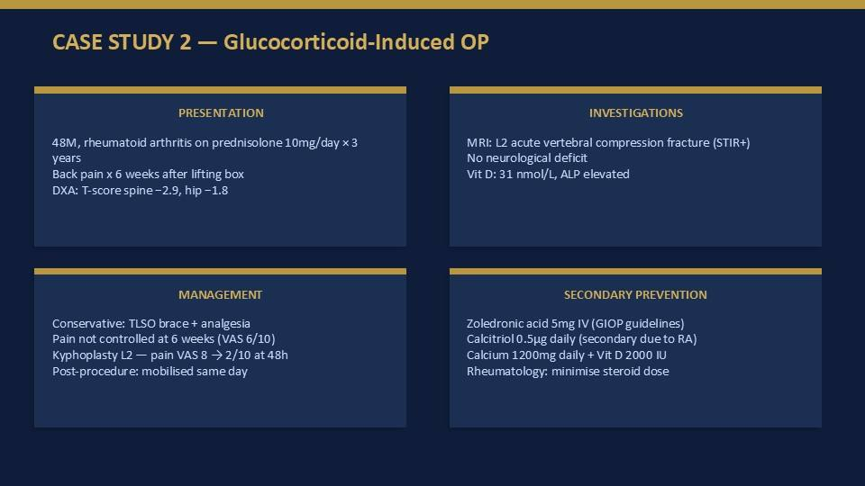
CASE STUDY 2 — Glucocorticoid-Induced OP
- PRESENTATION
- 48M, rheumatoid arthritis on prednisolone 10mg/day × 3 years
- Back pain x 6 weeks after lifting box
- DXA: T-score spine −2.9, hip −1.8
- INVESTIGATIONS
- MRI: L2 acute vertebral compression fracture (STIR+)
- No neurological deficit
- Vit D: 31 nmol/L, ALP elevated
- MANAGEMENT
- Conservative: TLSO brace + analgesia
- Pain not controlled at 6 weeks (VAS 6/10)
- Kyphoplasty L2 — pain VAS 8 → 2/10 at 48h
- Post-procedure: mobilised same day
- SECONDARY PREVENTION
- Zoledronic acid 5mg IV (GIOP guidelines)
- Calcitriol 0.5μg daily (secondary due to RA)
- Calcium 1200mg daily + Vit D 2000 IU
- Rheumatology: minimise steroid dose
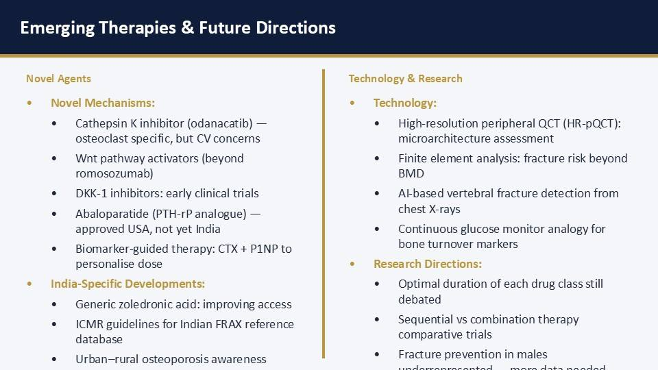
Emerging Therapies & Future Directions
- Novel Agents
- Novel Mechanisms:
- Cathepsin K inhibitor (odanacatib) — osteoclast specific, but CV concerns
- Wnt pathway activators (beyond romosozumab)
- DKK-1 inhibitors: early clinical trials
- Abaloparatide (PTH-rP analogue) — approved USA, not yet India
- Biomarker-guided therapy: CTX + P1NP to personalise dose
- India-Specific Developments:
- Generic zoledronic acid: improving access
- ICMR guidelines for Indian FRAX reference database
- Urban–rural osteoporosis awareness programmes
- Calcium fortification policy initiatives
- Technology & Research
- Technology:
- High-resolution peripheral QCT (HR-pQCT): microarchitecture assessment
- Finite element analysis: fracture risk beyond BMD
- AI-based vertebral fracture detection from chest X-rays
- Continuous glucose monitor analogy for bone turnover markers
- Research Directions:
- Optimal duration of each drug class still debated
- Sequential vs combination therapy comparative trials
- Fracture prevention in males underrepresented — more data needed
- Paediatric and young-adult osteoporosis management guidelines
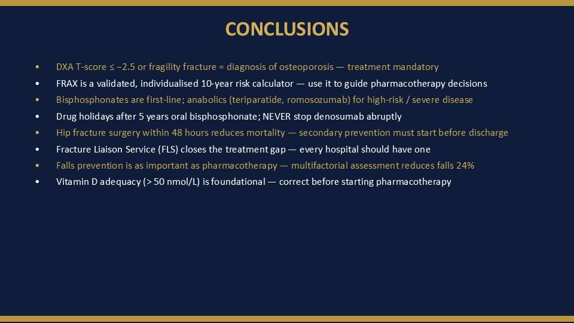
CONCLUSIONS
- DXA T-score ≤ −2.5 or fragility fracture = diagnosis of osteoporosis — treatment mandatory
- FRAX is a validated, individualised 10-year risk calculator — use it to guide pharmacotherapy decisions
- Bisphosphonates are first-line; anabolics (teriparatide, romosozumab) for high-risk / severe disease
- Drug holidays after 5 years oral bisphosphonate; NEVER stop denosumab abruptly
- Hip fracture surgery within 48 hours reduces mortality — secondary prevention must start before discharge
- Fracture Liaison Service (FLS) closes the treatment gap — every hospital should have one
- Falls prevention is as important as pharmacotherapy — multifactorial assessment reduces falls 24%
- Vitamin D adequacy (> 50 nmol/L) is foundational — correct before starting pharmacotherapy
Use this deck in your teaching
The original editable PowerPoint is free to download for non-commercial teaching, with credit to the author. Questions or corrections? Contact us.
About this deck
Prepared by Dr. Maninder Singh (MS Orthopaedics, Associate Professor, GMCH Amritsar) for postgraduate and clinical teaching. Where images are from open-licence sources (for example Wikimedia Commons), the licence and author appear on the slide. See our editorial policy. Educational use only — not medical advice; see Terms & Medical Disclaimer.